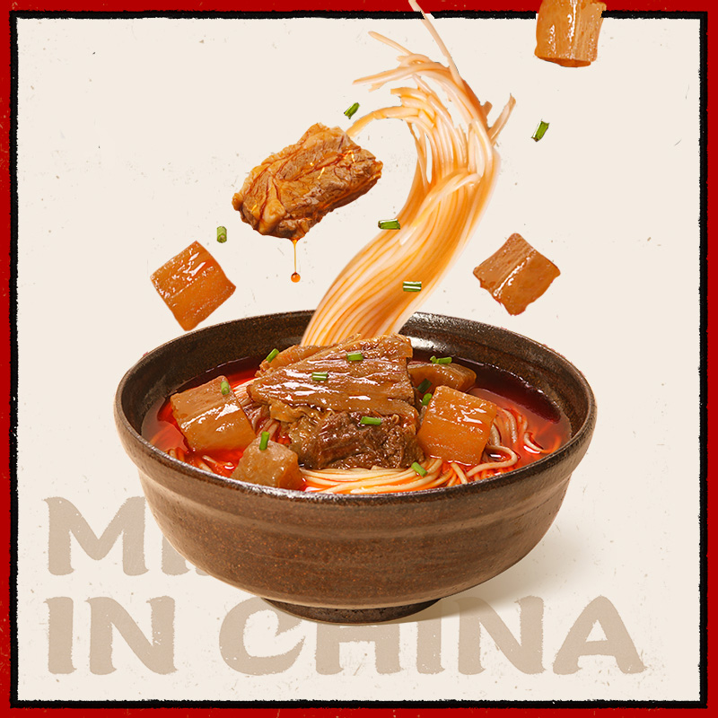

Beef Brisket with Tomatoes: As winter approaches, it's time for a steaming bowl of tomato beef! It is sweet and sour with a rich and fragrant soup. This is a traditional Chinese dish that is rich in nutrients, timely replenishes the body's needed calories and strengthens the immune system.
